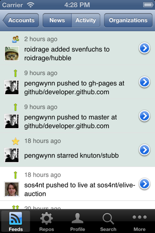
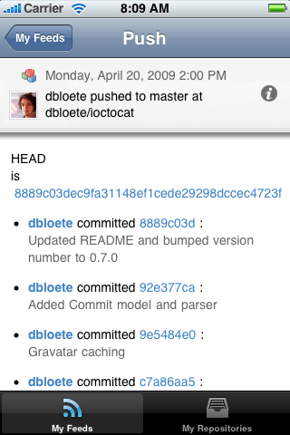
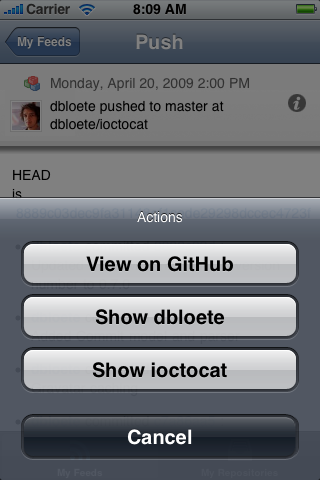
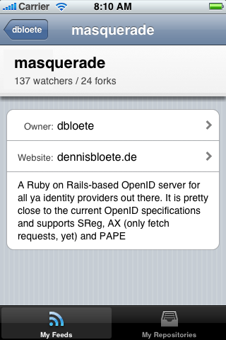
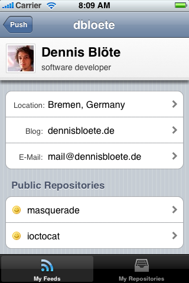
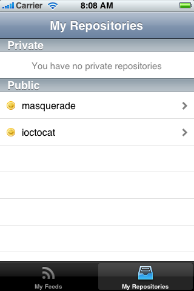
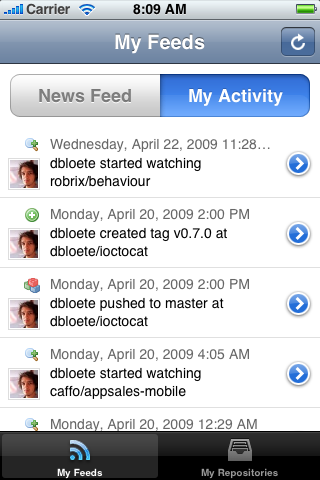

iOctocat
… is a GitHub app for the iPhone and iPod Touch.
It is open source and available on the App Store…
Features
Currently the application offers the following features:
- My Private News Feed
- My Activity Feed
- Profile View
- My Repositories
- Repository Details
- Recent Commits on Repository
- Browsing Repository Issues
- Commit Details
- ... and counting
Some screenshots
Click the iPhone to circle through the screenshots.
- 
- 
- 
- 
- 
- 
- 
Upcoming features / TODO
Things that are about to be added to the feature set:
- My Repository Watchlist
- Repository watching
- My Network
- User following
Anything that you would like to see implemented?
Go ahead and fork the project or create a feature request.